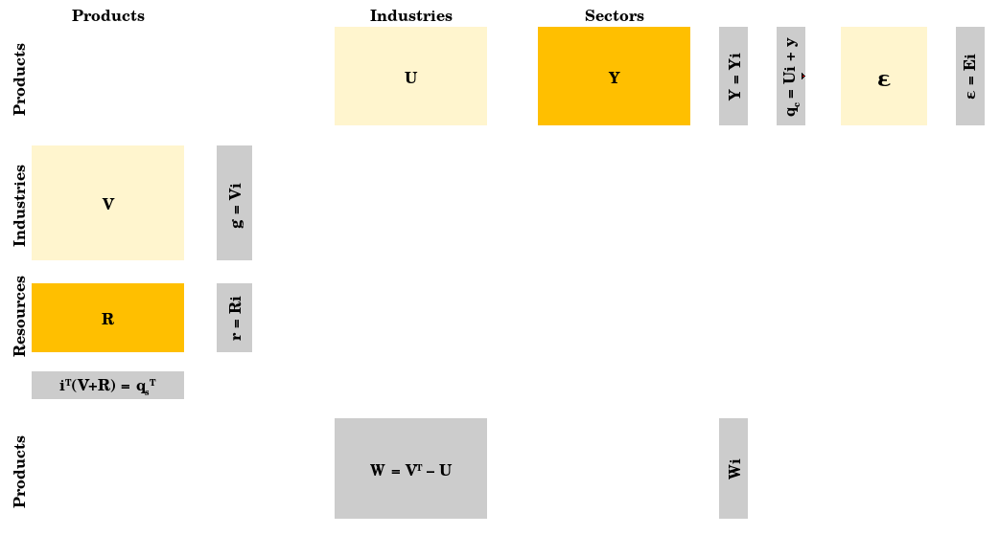
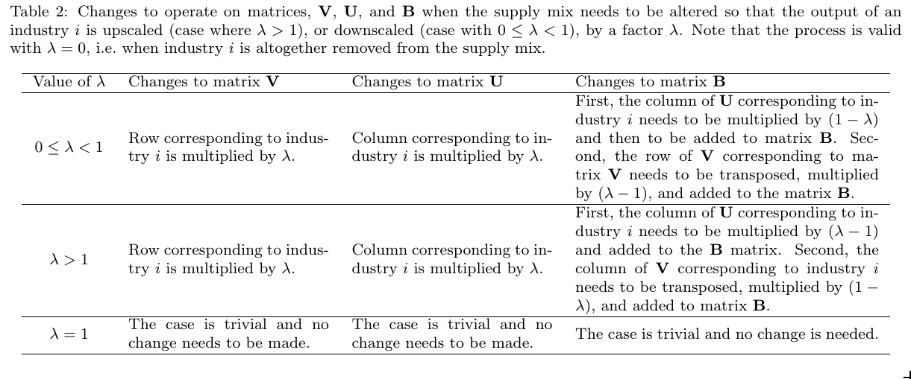

balancing_matrix.RmdIn this vignette we show how to use the balancing matrix B to modify the Energy Conversion Chain.
The balancing matrix is an extension of the original Physical Supply Use Table (PSUT) framework (see @Heun:2018) and has been introduced in a work presently under review. The figure below shows the expanded PSUT framework with the balancing B matrix.

Warning: Before detailing further the use of the balancing matrix, the user needs to be aware that its use complexifies the conduction of downstream Input-Output analysis (for instance with the Recca package). Indeed, by relocating flows to the balancing matrix, one is changing the definition of the matrices and vectors structuring the PSUT. Vectors may then be defined differently with a supply and with a consumption perspective. So, while the use of the B matrix may prove helpful, we recommend its use only if the implications of the given use are fully understood. We also recommend reading the paper that introduces the B matrix @mr_psut_paper.
The B matrix enables analysts to:
To scale up or down the supply of a given industry i by a factor \(\lambda\), one can proceed according to the table below, extracted from @mr_psut_paper .

To modify the final demand without loosing energy balance, one can simply redirect energy flows belonging to the final demand (Y matrix) to the balancing matrix B.
Let us use the AB world example introduced in the Get started vignette, but let us add flows, so that:
# Fix product-level balances within each country
tidy_AB_data_added_flows <- tidy_AB_data %>%
# First, adding statistical differences providing 100 ktoe of crude oil in country A:
tibble::add_row(Country = "A", Method = "PCM", Energy.type = "E", Last.stage = "Final", Year = 2018,
Ledger.side = "Supply", Flow.aggregation.point = "TFC compare",
Flow = "Statistical differences", Product = "Crude oil", Unit = "ktoe", E.dot = 100) %>%
# Second, adding the submarine race organised in country A:
tibble::add_row(Country = "A", Method = "PCM", Energy.type = "E", Last.stage = "Final", Year = 2018,
Ledger.side = "Consumption", Flow.aggregation.point = "Industry",
Flow = "Submarine race", Product = "Crude oil", Unit = "ktoe", E.dot = 100) %>%
# Third, adding the stock changes supplying 400 ktoe of coke oven coke in country B:
tibble::add_row(Country = "B", Method = "PCM", Energy.type = "E", Last.stage = "Final", Year = 2018,
Ledger.side = "Supply", Flow.aggregation.point = "Total primary energy supply",
Flow = "Stock changes", Product = "Coke oven coke", Unit = "ktoe", E.dot = -400) %>%
# Fourth, adding the bonfire sessions in country B:
tibble::add_row(Country = "B", Method = "PCM", Energy.type = "E", Last.stage = "Final", Year = 2018,
Ledger.side = "Consumption", Flow.aggregation.point = "Industry",
Flow = "Bonfires", Product = "Coke oven coke", Unit = "ktoe", E.dot = 400) %>%
# Fifth, adding stock build-up of 200 ktoe of coke oven coke in country A
tibble::add_row(Country = "A", Method = "PCM", Energy.type = "E", Last.stage = "Final", Year = 2018,
Ledger.side = "Supply", Flow.aggregation.point = "Total primary energy supply",
Flow = "Stock changes", Product = "Coke oven coke", Unit = "ktoe", E.dot = 200) %>%
# Sixth, adding imports of 200 ktoe of coke oven coke by country A
tibble::add_row(Country = "A", Method = "PCM", Energy.type = "E", Last.stage = "Final", Year = 2018,
Ledger.side = "Supply", Flow.aggregation.point = "Total primary energy supply",
Flow = "Imports [of Coke oven coke]", Product = "Coke oven coke", Unit = "ktoe", E.dot = 200) %>%
print()## # A tibble: 105 × 11
## Country Method Energy.type Last.stage Year Ledger.side Flow.aggregation.poi…
## <chr> <chr> <chr> <chr> <dbl> <chr> <chr>
## 1 A PCM E Final 2018 Consumption Industry
## 2 A PCM E Final 2018 Consumption Industry
## 3 A PCM E Final 2018 Consumption Industry
## 4 A PCM E Final 2018 Consumption Industry
## 5 A PCM E Final 2018 Consumption Industry
## 6 A PCM E Final 2018 Consumption Industry
## 7 A PCM E Final 2018 Consumption Other
## 8 A PCM E Final 2018 Consumption Other
## 9 A PCM E Final 2018 Consumption Other
## 10 A PCM E Final 2018 Consumption Other
## # … with 95 more rows, and 4 more variables: Flow <chr>, Product <chr>,
## # Unit <chr>, E.dot <dbl>We can now verify that the adjusted ECC remains balanced:
# Fix product-level balances within each country
tidy_AB_data_added_flows %>%
IEATools::tidy_iea_df_balanced()## [1] TRUENow, let’s assume that we want to modify the given ECC as follows:
Note: Statistical differences and stock changes will not necessarily need to be relocated to the balancing B matrix. This is an option available to the analyst that we use here as example, which may prove appropriate in some situations and for some purposes.
We will make use of the following functions:
IEATools::add_psut_matnames() will add a column stating the matrix to which each flow belongs (function belonging to the IEATools package);stat_diffs_to_balancing() will move statistical difference flows, whether they are supply or use flows, to the balancing B matrix;stock_changes_to_balancing() will move stock changes flows, whether they are supply or use flows, to the balancing B matrix.The code is as follows:
tidy_AB_data_relocated_flows <- tidy_AB_data_added_flows %>%
IEATools::add_psut_matnames() %>%
stat_diffs_to_balancing() %>%
stock_changes_to_balancing() %>%
print()## # A tibble: 105 × 12
## Country Method Energy.type Last.stage Year Ledger.side Flow.aggregation.poi…
## <chr> <chr> <chr> <chr> <dbl> <chr> <chr>
## 1 A PCM E Final 2018 Consumption Industry
## 2 A PCM E Final 2018 Consumption Industry
## 3 A PCM E Final 2018 Consumption Industry
## 4 A PCM E Final 2018 Consumption Industry
## 5 A PCM E Final 2018 Consumption Industry
## 6 A PCM E Final 2018 Consumption Industry
## 7 A PCM E Final 2018 Consumption Other
## 8 A PCM E Final 2018 Consumption Other
## 9 A PCM E Final 2018 Consumption Other
## 10 A PCM E Final 2018 Consumption Other
## # … with 95 more rows, and 5 more variables: Flow <chr>, Product <chr>,
## # Unit <chr>, E.dot <dbl>, matnames <chr>Now, we can see that the Statistical differences and Stock changes flows belong to the balancing B matrix:
tidy_AB_data_relocated_flows %>%
dplyr::filter(stringr::str_detect(Flow, "Statistical differences")) %>%
print()## # A tibble: 1 × 12
## Country Method Energy.type Last.stage Year Ledger.side Flow.aggregatio… Flow
## <chr> <chr> <chr> <chr> <dbl> <chr> <chr> <chr>
## 1 A PCM E Final 2018 Supply TFC compare Stat…
## # … with 4 more variables: Product <chr>, Unit <chr>, E.dot <dbl>,
## # matnames <chr>and:
tidy_AB_data_relocated_flows %>%
dplyr::filter(stringr::str_detect(Flow, "Stock changes")) %>%
print()## # A tibble: 2 × 12
## Country Method Energy.type Last.stage Year Ledger.side Flow.aggregatio… Flow
## <chr> <chr> <chr> <chr> <dbl> <chr> <chr> <chr>
## 1 B PCM E Final 2018 Supply Total primary e… Stoc…
## 2 A PCM E Final 2018 Supply Total primary e… Stoc…
## # … with 4 more variables: Product <chr>, Unit <chr>, E.dot <dbl>,
## # matnames <chr>Finally, let’s verify that the Energy Conversion Chain remains balanced once flows are relocated to the balancing B matrix:
tidy_AB_data_relocated_flows %>%
IEATools::tidy_iea_df_balanced()## [1] TRUENote regarding the sign convention in the balancing matrix: Flow appearing as positive in the B matrix are akin to final demand flows. For instance, final demand flows relocated to B will be positive, a build-up in energy products stocks will be positive. Conversely, flows akin to supply will be registered as negative in B: for instance, flows removed from supply, energy products drawn from stocks, will all appear as negative values.
In conclusion, the analyst may use directly some functions directly available, such as stat_diffs_to_balancing() and stock_changes_to_balancing(). Alternatively, the analyst may directly relocate a flow to B by modifying the matrix name column of the flow that needs to be modified. Be careful with the sign convention!